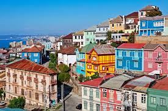
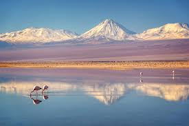
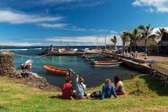
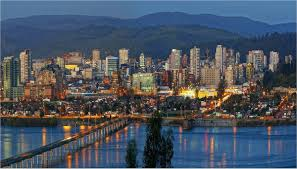
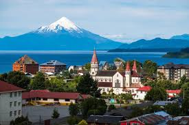

Valparaíso es una ciudad portuaria en la costa central de Chile, conocida por su arquitectura colorida y
su vibrante escena cultural. Es un importante centro histórico y patrimonial, con colinas empinadas que
albergan casas pintorescas y funiculares antiguos. Su puerto ha sido clave para el comercio marítimo, y
la ciudad ha sido declarada Patrimonio de la Humanidad por la UNESCO por su singular diseño urbano.
Valparaíso también es sede de la Universidad Técnica Federico Santa María y de varias instituciones
culturales, lo que la convierte en un punto focal artístico e intelectual del país.

San Pedro de Atacama es un pequeño pueblo ubicado en el desierto de Atacama, en el norte de
Chile. Es conocido por ser una de las principales puertas de entrada para explorar el desierto
más árido del mundo. El lugar atrae a turistas por sus impresionantes paisajes naturales, que
incluyen salares, géiseres, termas y formaciones rocosas únicas como el Valle de la Luna.
Además, San Pedro es un centro importante de la cultura atacameña, con sitios arqueológicos,
museos y una rica historia indígena. La claridad de su cielo lo convierte también en un destino
popular para la observación astronómica.

Hanga Roa es la única ciudad y principal asentamiento de la Isla de Pascua (Rapa Nui), ubicada
en el Océano Pacífico y perteneciente a Chile. Es el centro administrativo, comercial y
turístico de la isla, conocido por su proximidad a los famosos moáis, las enigmáticas estatuas
de piedra esculpidas por la antigua civilización Rapa Nui. La ciudad tiene un ambiente relajado
, con una mezcla de cultura polinesia y chilena, y ofrece fácil acceso a las playas, sitios
arqueológicos y al Parque Nacional Rapa Nui, que abarca gran parte de la isla. Hanga Roa
también es el puerto principal y cuenta con una pequeña infraestructura para el turismo
.

Concepción es una de las principales ciudades del sur de Chile, ubicada en la región del Biobío,
cerca de la desembocadura del río del mismo nombre. Es un importante centro industrial,
comercial y educativo, conocido por su influencia en la historia política y cultural del
país. Concepción alberga una gran cantidad de universidades, lo que le da una vibrante vida
estudiantil. Además, es un núcleo clave para la música y las artes en Chile, particularmente
el rock y el jazz. La ciudad también es un punto de acceso a paisajes naturales cercanos,
como el Parque Nacional Nonguén y la costa del Pacífico.

uerto Varas es una pintoresca ciudad en el sur de Chile, ubicada en la región de Los Lagos, a
orillas del lago Llanquihue. Es famosa por sus impresionantes vistas de los volcanes Osorno y
Calbuco, que se reflejan en el lago. Fundada por colonos alemanes en el siglo XIX, la ciudad
conserva una fuerte influencia germana en su arquitectura y cultura, con casas de estilo alpino
y una notable gastronomía. Puerto Varas es un destino turístico popular, conocido por sus
actividades al aire libre, como senderismo, deportes acuáticos y pesca, además de su proximidad
a atracciones naturales como los Saltos del Petrohué y el Parque Nacional Vicente Pérez Rosales.
